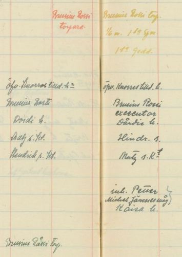

SUKUTUTKIMUSOPPIMATERIAALIA NETISSÄ VUODESTA 1999 LÄHTIENPSYKOLOGIAN PIKALINKIT PSYKAN VIDEOABIKURSSIT: PSYKOLOGIAN MAAILMA -VIDEOKERTAUSKURSSI ABEILLE (vlogi) - uudet OPSit PS7 ABI KERTAUSKURSSI (opetustilanne) - VANHA OPS (OPS 2016 ja 2021): PS1 Toimiva ja oppiva ihminen PS2 Kehittyvä ihminen PS3 Tietoa käsittelevä ihminen PS4 Tunteet ja mielenterveys PS5 Yksilöllinen ja yhteisöllinen ihminen Iso haaste sukututkimukselle ovat myös Suomesta ulkomaille muuttaneet sukulaiset. Kuinka ihmeessä heistä saa tietoja ja miten heitä tavoittaa. Itse olen yksinkertaisesti netissä selannut Kanadan puhelinluetteloja ja löytänyt osoitteita ja ottanut yhteyttä kirjeitse niihin, joita ei ole löytynyt esimerkiksi facebookista tai netistä. Puolet omasta Saarijärven Pajupuron Rossin suvustani nimittäin lähti Kanadaan lähinnä 1910-luvulla. Olen saanut heistä osaan yhteyttä ja näin saanut valokuvia ihmisistä, joita ei isäni enkä tietenkään minäkään ole koskaan nähnyt. Kuvassa pappani isoveli Onni Rossi (1892-1972) ja hänen vastavihitty vaimonsa, Kurikasta hieman jälkeenpäin Kanadaan perheensä kanssa muuttanut, Fanny (Syvä)Oja (1900-1970). Kuva on todennäköisesti heidän vihkiäisistään 26.6.1918. Kanadassa. Onni muutti Kanadaan vuonna 1910. Rautalammin Rossit Pajupuron Rossit Tervetuloa latomuseoon! Linkkejä sukututkijalle |
Rautalammin Rossit
Rossi on erityisesti italialainen nimi. Rossi on jopa Italian yleisin sukunimi ja toiseksi yleisin on siitä oleva eteläinen muunnos Rosso. Kiinnostukseni sukua ja juuri sukunimeämme kohtaan heräsi oikeastaan joskus 80-luvulla, kun eräs henkilö väitti, että Rossi sukunimemme juontaa juurensa oikeastikin Italiasta, josta kaksi kalastajaa olisi 1400-1500 -luvulla etsiytynyt töihin Laatokalle ja sieltä monien vaiheiden kautta päätynyt Rautalammille. Koko väittämä taisi olla lopultakin legendaa - toisaalta mies oli asiasta tosissaan. Mistä hän olisi tiedon saanut, siitä minulla ei ole tietoa enkä minäkään tiedä edes koko henkilön nimeä, mutta näinhän ne jutut juuri liikkeelle lähtevätkin. Yleensä ollaan aika varmoja siitä, ettei Suomen Rosseilla ole mitään tekemistä Italian Rossien kanssa - siis noin niinkuin historiallisesti.
Italiassa Rosseja asuu kuitenkin kaikkiaan n. 195 000, asukasmäärään nähden enemmän kuin missään muualla maailmassa. Yhdysvalloissa n. 34 800 ja Argentiinassa n. 33 540. Rosseja on ympäri maailmaa erityisesti italialaisten siirtolaisten myötä. Asukasmäärään suhteutettuna paljon Rosseja on niin Ranskassa, Luxemburgissa, Australiassa, Belgiassa, Itävallassa kuin Englannissakin. Suomessa Rosseja ei tällä hetkellä elä kovinkaan paljoa, vain n. 2500, joka sinänsä on taas asukasmäärään suhteutettuna melkoinen määrä, paljon enemmän kuin vaikkapa Yhdysvalloissa. Nimi Rossi on monikkomuoto italian sanasta rosso, joka tarkoittaa punaista. Rossi eli "punaiset". Rosseilla on Italiassa ollut myös kytköksensä mafiaan. Maailman ylivoimaisesti tunnetuin ja googlatuin Rossi on tietysti Valentino Rossi, yhdeksänkertainen ratamoottoripyöräilyn maailmanmestari. Mutta tämän työni tarkoitus on lähinnä etsiytyä oman Rossi-sukuni juurille eikä pohtia rossiutta yleismaailmallisesti. Rautalammin Rossien juuret ovat, kuten nimikin sanoo vanhan emäpitäjän Rautalammin alueella, nykyisen Konneveden kunnan Kärkkäälän Rossinkylässä. Rossien kantatilana on pidetty Iso-Rossin taloa, nykyistä Jokelan taloa, joka sijaitsee suuren Liesveden ja pienen Ukonjärven välissä. Rossien kantaisäksi on löydetty Brusius Rossi, joka mainitaan asutuksen yleisluettelossa ensimmäisen kerran vuonna 1642 (Brusius, sukunimi on kirjoitettu huonosti, mutta lie Rosi tms.), 1644 Brusius Råss ja 1646 Ambrosius Råssi. Vuodelta 1639 on maininta Brusius Madhssonista (Matin pojasta), jota on yleisesti pidetty samana henkilönä. Tämän saman henkilön kohdalla on puhuttu paljon myös vuodelta 1637 yleisluettelossa mainitusta Rasimus (Brusius?) Sikaisesta ja vaimostaan Birita Hindrichsdr:sta (Riitta Heikintyttärestä) ja 1639 mainitusta Ambrosius Kaipaisesta, jotka olisivat siis lopulta yksi ja sama henkilö eli se todellinen Rautalammin Rossien varma kantaisä Ambrosius Rossi. Arvailuksi tietysti menee, kun olen miettinyt, voisiko tuo Sikainen sana viitata tuossa vaiheessa Kellankosken yläpuoliseen Siikakoskeen (onko nimi edes koskella tuohon aikaan vielä ollut Siikakoski), jonka rantamilta esi-isämme olisi tullut Rossinkylän maisemiin. Rossi-sukunimen katsotaan yleisimmin muotoutuneen Ambrosius tai Brusius esi-isämme etunimestä. Voi olla, että ymmärrän sukututkimuksen alkeisoppilaana asiat väärin, mutta mielenkiintoista on, että asutusluettelossa 1550-luvulta mainitaan Konneveden erämaan (? äremarch) Rossijla kylä/taloryhmä ("by" voi merkitä myös taloryhmää), jossa (ifr. suomeksi "josta" oli) eli Oleff Nilsson. Olisiko siis mahdollista, että tällainen Rossien talo olisi ollut olemassa jo 1500-luvulla vai onko niin, että Jalmari Finnen alkuunpanemassa asutuksen yleisluetteloinnin yhteydessä Rossila lisättiin tämän Olavin Niilonpojan kotipaikaksi - mutta millä perusteella? Periaatteessahan tuo 1552-1559 (s.82) oleva maininta viittaisi siihen, että Rossit olisivat lähes vanhinta väestöä alueella. Vuosien 1560-1579 luettelossa (s.53) mainitaan nimi Oleff Kärkäs (joka toki voi viitata Kärkkäisten sukuun eikä Kärkkäälän taloihin) heti Liesveden alla. Oliko tämä henkilö sama kuin mainittu Rossilan Olavi Niilonpoika? Sittenhän näitä Kerkeksiä (Kärkkäisiä/Kärkkääläisiä) mainitaan useampia, mm. Thomas Ollsson, joka saattaisi olla tuon Olavin poika. En ole tätä tietä sen enempää pohtinut, sillä Rossin sukua kauemmin tutkineet sukututkijat eivät ole maininneet tätä mahdollisuutta. Toisaalta Suomen Pankin entisen johtokunnan jäsenen Reino Rossin ajatus siitä, että Ambrosiuksen isä olisi ollut Raatikaisia (joita asuinluettelo Kärkkäälästä mainitsee) ja Ambrosius olisi saanut valmiina itselleen talon, jonka nimi olisi ollut Rossi, selittyisi tällä teoriallani. Myös se tukee ajatusta, että yleisluettelossa vuosina 1600-1619 Kärkkäälässä Lars Raatikaisen yhteydessä mainitaan Carll Olsson, joka taas saattaisi liittyä aiemmin maintisemaani Rossilan Olavi Niilonpoikaan. Nähtävästi Reino Rossi on rakentanut teoriansa tätä taustaa vasten. Tiedä häntä? Joka tapauksessa yleisesti on vakiintunut ajatus, joka asutuksen yleisluettelostakin voidaan löytää, että Rossien kantaisä olisi Ambrosius Rossi ja Riitta Heikintytär sekä toinen vaimo Dordi. Kenenkään synnyinvuosista ei ole varmuutta, mutta on arveltu Ambrosiuksen syntyneen n. vuonna 1610 ja kuolleen v.1668. Mormonien Family Search -sivustolle (myöhemmin lyhenteellä FS) on joku tuntematon sukuselvittäjä laittanut Ambrosiuksen synnyinajaksi niinkin myöhäisen kuin 1626 ja että hän olisi avioitunut Dordin (1635-1676) kanssa vuonna 1662, sillä tuolloin Dordi-nimi ilmestyy asutusluetteloon ja 1656 Brita häipyy luettelosta. 
Brusius Rossin torpasta aletaan puhua 1650-luvulta lähtien. Entäpä sitten lapset? Rautalammin ensimmäiset henkikirjat laadittiin 1634/1635 ja siitä eteenpäin. Näitä kirjoja minulla ei ole ollut käytettävissäni. Siksi luotan lähinnä muiden sukututkijoiden selvityksiin. Hieman tietenkin pakkaa sekoittaen. Ambrosius ja Brita olisivat siten saanet lapset Matti (Matts), joka lie syntynyt 1640-luvulla, Heikki (Hindrik), joka mainitaan Matin kanssa asutusluettelossa v. 1662 yhtäaikaa ja syntymä tapahtunut mahdollisesti samoihin aikoihin eli 1640-luvulla (sukututkimuksessa on usein päädytty vuoteen 1647). Kolmas poika olisi nimetty isänsä mukaan Brusius ja hän on lie syntynyt 1650-luvulla (FS:n mukaan v.1656). Sukumme tutkijat esittävät, että Ambrosius ja Riitta ovat saaneet vielä yhden pojan Juhon (Johan). Lisäksi yleisluettelossa mainitaan talossa asuvana Petteri/Pekka (Petter), joka on Mikko Jämsän vävy ja jonka vaimo on Kaisa. Kuva: Kansallisarkiston digitaaliarkisto, Asutuksen yleisluettelot, Rautalampi, Laukaa, Viitasaari, Saarijärvi 1654-1673, Kärkäs, s.175. Toisen vaimonsa Dårdin (Dorde) kanssa Ambrosius on saanut pojan Mikko (Michel) ja tytön Vappu (Walborg), joka mainitaan yleisluettelossa vuoden 1667 kohdalla. He ovat syntyneet todennäköisesti välillä 1661-1667. Vuodesta 1675 puhutaan edelleen Brusius Råssin torpasta (asutuksen yleisluettelo 1675-1693 s.175), jonka päänä on nyt vanhin poika Matti (Mats Ambrosiusson). Torppaa asuttavat vuonna 1675 Matin kanssa Vappu-vaimo, Dårdi-äitipuoli sekä veljet Ambrosius ja Juho. Vuonna 1691 Rossin torpassa asuvat Matin lisäksi Juho (k.1726 FS) ja hänen vaimonsa Riitta (Brijta brh.). Sitten torpassa asuu Matin veljet Ambrosius sekä Mikko, sekä lisäksi Simo (nimeen liitetty lyhenne Kt viittaa mahdollisesti sotaväkeen kuuluvaksi, eli Rossien velvollisuus oli elättää tätä sotilasta vrt. "knihti". Kt tarkoittaa usein myös yksinkertaisesti kruunun- tai knihdintorppaa. Sama Kt lyhenne löydetään Matin ja Heikin nimien yhteydestä vuoden 1662 kohdalta) ja tämän vaimo Riitta (lyh. Kthu) sekä Matin oma poika Juho ja tämän vaimo Maria. Seuraavassa 1694-1713 luettelossa Brusius Råssin (eller) Mats Brussiussonin talon isäntänä on Juho Matinpoika vaimonsa Marian kanssa. Juhon veljet Ambrosius ja Tahvo (Staffan) ja sotamies Simo ja Riitta sekä Tahvo-renki (dg=dreng). Vuodesta 1702 Rossin taloa nähtävästi isännöi Juhon veli, Matin poika Tahvo (Staffan) Rossi vaimonsa Kaisan (Caisa) kanssa ja heille on syntynyt tytär Vappu (Walb.). Tahvon vaimo Kaisa (tai Kaarina, s.1680) on Variksia, Laurintytär ja vihitty Tahvon kanssa lokakuun 1. päivänä 1699. 1710-luvulta taloa kutsutaankin edelleen Brusius Rossin tai Staffan Mattsonin taloksi. Juho-velikin mainitaan vielä elävien kirjoissa. Mutta, kuten jo aiemmin totesin, olen tämän alkukatsauksen laatinut hyvin vähäisin tiedoin, lähinnä asutuksen yleisluetteloinnin sekä muutamien muiden sukutietojen perusteella. Rautalammin Rossien sukuseuralla on varmasti tarkempia tietoja asiasta. Ja ilman muuta toivon, että virheitä huomatessanne, korjailkaa! |